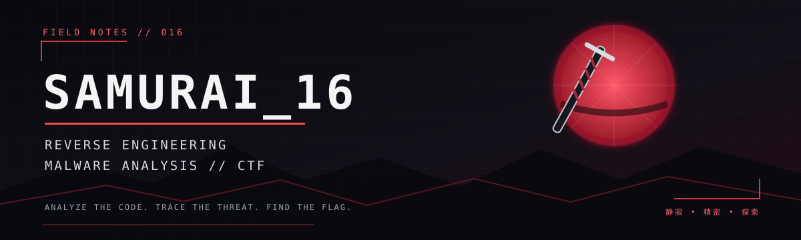

01 / RE
Reverse Engineering
Static and dynamic analysis, assembly patterns, binary internals, packing, and obfuscation.

I explore what hides beneath the surface of software — reversing binaries, studying malicious behavior, and learning through CTF challenges. This archive collects technical notes, methodologies, and reproducible work.
Static and dynamic analysis, assembly patterns, binary internals, packing, and obfuscation.
Inspecting suspicious files, tracing execution, and documenting observable behavior.
Challenge solving with a focus on Reverse Engineering and PWN.
Building small Python helpers and repeatable workflows for analysis.
Challenge notes and analysis collected in one submission document.
Firmware container analysis, CRC checks, DEFLATE, CPIO, and environment recovery.
PE and embedded script analysis, hash guards, date derivation, and RC4.
ELF metadata, address-delta decoding, xorshift, and raw DEFLATE extraction.
ELF initialization analysis and reversing a rolling transform.
Static x86-64 analysis and inversion of arithmetic and bitwise transforms.
.NET IL, encrypted frames, parser behavior, and audit-chain verification.
Heap leaks, unsorted-bin libc disclosure, top-chunk corruption, and House of Force targeting __malloc_hook.
Three-stage ret2csu ROP, stack pivot, libc leak, and system(command).
Restricted instruction sequences, persistent registers, and a staged payload written to an RWX mapping.
No matching field notes.